Task info · Spatial Go/No-Go
Spatial Go/No-Go
A cyan sphere is a go. Tap, click, or trigger it before the deadline. A magenta octahedron is a no-go. Do not respond. Targets stay in front of you, on a near, mid, or far plane. The scene title is Orbital Energy Sorter. There is no practice block.
What it shows
This is the spatial sibling of Go / No-Go. It is a separate task. Depth is a planned factor: the same physical target is shown on three frontal planes, so a nearer target looks larger. The run is one shared field. Targets are not placed beside or behind the viewer.
The results screen reports go hits, no-go false alarms, and mean go response time for the whole run and again for near, mid, and far. A hit is a response on a go trial inside the window. A false alarm is a response on a no-go trial. A miss is a go trial that reaches the deadline with no response. A correct rejection is a no-go trial with no response. This is a teaching demo, not a clinical or normed test.
The page is a WebXR special case. It does not use the gamified or classical shell, and the hub card has no Classical link. vr.html redirects here.
Parameters
- Trials
- 30 trials. No practice block. 21 go (70%) and 9 no-go (30%).
- Go stimulus
- Cyan sphere,
#00F5D4, physical radius 0.40 m. Respond within the window. - No-go stimulus
- Magenta octahedron,
#FF2A85, physical radius 0.40 m. Do not respond. The shape spins. The spin does not change the window. - Depth planes
- Near 2.70 m, mid 3.35 m, far 4.05 m, measured along the straight-ahead axis from the eye pose at the start of the run. All three sit inside the frontal range of about 2.5–4.2 m. Each plane has 7 go trials and 3 no-go trials. The full list is a Fisher–Yates shuffle, so plane and trial type stay balanced while order does not.
- Placement
- Each target is placed by visual angle from fixation, then dropped onto its plane. Horizontal angle is −18° to +18°. Vertical angle is −5° to +6°. With the eye near the origin, that stays inside about x ±2.5 m and within about −0.5 to +0.6 m of eye height. The target is always in front.
- Size
- Physical radius stays 0.40 m on every plane. Visual angle is the full diameter,
2 × atan(radius / distance). Nearer targets look bigger. Visual angle is not held constant. On-axis diameters are about 16.8° near, 13.6° mid, and 11.3° far. - Fixation
- A white plus at 3.00 m straight ahead, between the near and mid planes, shown during the gap before each target. The target itself does not move during the 1200 ms window.
- Response window
- 1200 ms from stimulus onset. One response counts. A second trigger in the same trial is ignored.
- Gap
- 800–1400 ms after the previous trial ends, before the next target. The fixation plus is shown during the gap.
- Score
- Go hit: +100 plus a speed bonus of
round((1200 − rt) / 10)points, and the streak increases by 1. Go miss: streak resets. No-go false alarm: −150 and the streak resets. No-go correct rejection: +50 and the streak is unchanged. The live score and streak stay on screen during the run. - Response time
- Milliseconds from stimulus onset on a response. A withhold stores an empty time. Mean go response time uses hits only.
How to play
- Press Start experiment. A headset is optional. WebXR, tested on VIVE Focus 3.
- On a phone or tablet, tap the object. On a desktop, click it. In a headset, pull the trigger while the laser is on it. Landscape keeps more of the field on a phone screen.
- On a cyan sphere, respond before 1200 ms. On a magenta octahedron, keep still until the trial ends.
- Empty space is not a response. The object is the button.
- Play again starts a new 30-trial run and replaces the saved session.
Responses stay on this device.
Sound
SFX uses the shared localStorage key project-trial:sfx (on or off). When that key is missing, sound is on. Opening the task does not write the key. A hit is a short rising chime, a correct rejection is a soft tone, and a miss or false alarm is a low buzz. This task does not use the Noematachograph first-visit mute.
Data
When the run finishes, this browser stores one payload under projectTrial_orbital_gonogo_v1. A later finished run replaces that payload. Nothing is uploaded. There is no Clear saved control and no mode field. The page does not log orientation turns.
Download CSV writes the current run. Columns are trial_num, trial_type (GO or NOGO), depth_plane (near, mid, or far), plane_distance_m, distance_m, visual_angle_deg, angle_h_deg, angle_v_deg, iti_ms, x_pos, y_pos, z_pos, eccentricity_deg, stimulus_radius_m, response_made, outcome, rt_ms, score_total, and streak. distance_m is the distance from the eye at onset. plane_distance_m is the planned plane. The saved payload includes the same trial rows plus hit rate, false-alarm rate, and mean go response time overall and by depth. The file name is projectTrial_orbital_gonogo_ plus a timestamp.